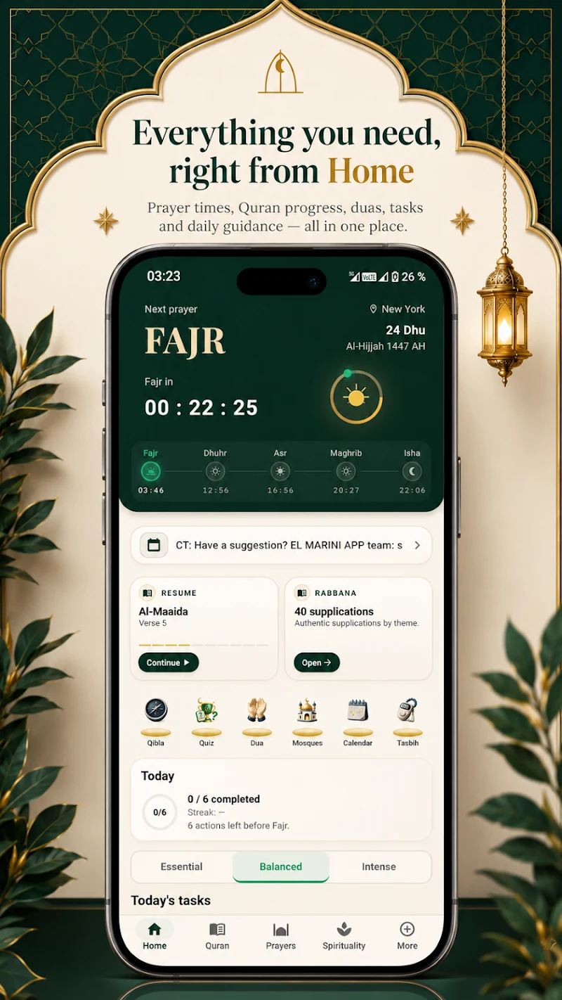
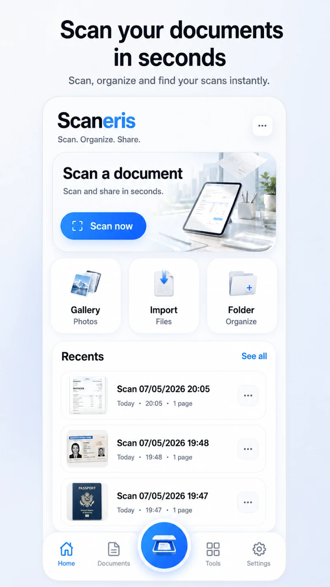

Muslim App
Prières, Coran et outils du quotidien. Six langues, dont l’arabe et l’ourdou.
Spiritualité
Multilingue & RTL

Flutter · Android · iOS
Des corrections précises. Des applications fiables.
Bugs
Interfaces
Achats
Stores

Je développe mes propres applications. Les contraintes de production nourrissent chaque correction, chaque interface et chaque livraison.
Prières, Coran et outils du quotidien. Six langues, dont l’arabe et l’ourdou.
Spiritualité
Multilingue & RTL

Scanner, organiser, signer. Des outils PDF avec traitement sur l’appareil.
Productivité
PDF & OCR

Un réveil à missions. Le soin de l’interface, jusqu’au premier geste du matin.
Quotidien
Réveils & missions
Un problème doit être compris avant d’être corrigé. Voici comment je passe d’un blocage à une livraison vérifiée.
Le constat
Je retrouve le problème dans ses conditions réelles : appareil, version, clavier, orientation, réseau ou état du compte. Le point de départ est observable.
Le diagnostic
Je remonte de l’interface à la logique, puis aux dépendances et à la plateforme. Le diagnostic précise ce qui bloque et ce qu’il faut modifier.
La correction
La correction traite la cause identifiée. Je vérifie le scénario initial, les situations voisines et les risques de régression, avec les tests adaptés.
La livraison
Je prépare les builds, la signature, les achats intégrés et les éléments nécessaires à la soumission. La livraison est documentée et vérifiée sur les plateformes concernées.
L’audit donne une lecture précise du problème et un ordre de correction. Vous décidez ensuite de la suite, avec les éléments en main.
390€HT
Rapport livré sous 48 h ouvrées.
Le prix de l’audit est déduit si vous me confiez ensuite la correction.
Les points retenus sont corrigés au prix annoncé, avec une validation adaptée à chaque changement.
Builds signés, TestFlight, configuration des achats et réponses techniques aux rejets de publication.
Tailles de texte, tablettes, clavier, paysage et langues RTL. Une interface pensée pour ses conditions d’utilisation.
Sur des applications Flutter Android et iOS : bugs, interfaces, achats intégrés, export de documents et publication. L’audit permet de préciser le périmètre avant toute correction.
Une description du problème, les étapes pour le reproduire, la plateforme concernée et la version de l’app. L’accès au code et aux éléments techniques utiles est organisé ensuite.
Vous recevez le diagnostic, les priorités et le chiffrage. Vous choisissez ensuite les corrections à confier. Le prix de l’audit est déduit si nous poursuivons ensemble.
Un e-mail suffit : décrivez le blocage, la plateforme et ce que vous avez déjà essayé. Je vous réponds avec une première lecture et les éléments nécessaires pour avancer.
Quelques lignes suffisent. Ce qui se passe, sur quel appareil, et depuis quand.
Parlons de votre appDéveloppeur indépendant · France
Android & iOS · Français & English